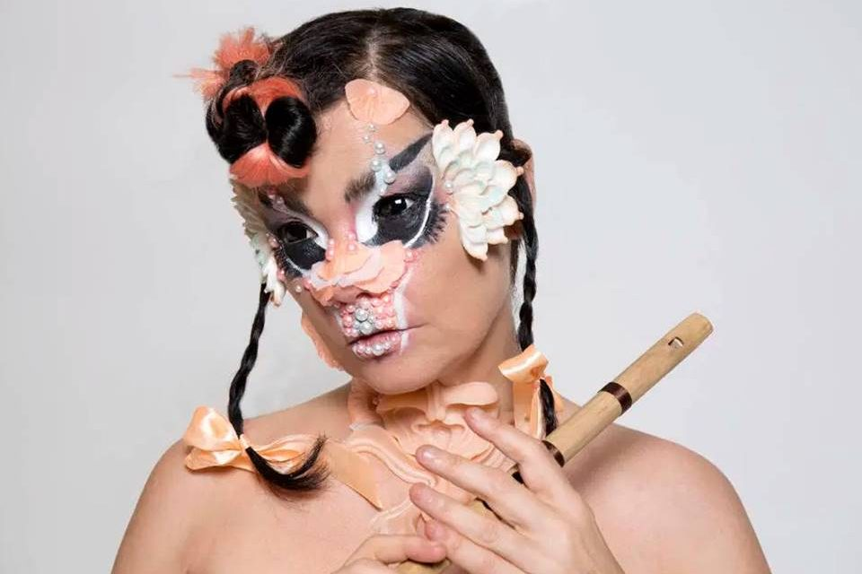

Biografia

Björk Guðmundsdóttir é uma cantora islandesa, compositora, atriz, instrumentista e produtora
musical,
nascida e criada em Reykjavik, capital da Islândia no ano de 1965.
Já lançou nove álbuns de estúdio, duas trilhas sonoras. Seu estilo musical é único e sua voz é
aclamada por suas qualidades distintivas e incomuns.
A carreira musical de Björk começou aos onze anos, com seu estudo de clássicos de piano na escola
primária, sendo que uma de suas gravações foi transmitida pela rádio nacional, e, depois de ouvi-la,
um representante da gravadora Fálkinn contactou a família para oferecer um contrato para a menina.
Björk tem uma extensa discografia com 13 discos de estúdio, incluindo a carreira
solo, bandas e duas
trilhas sonoras.
Além disso, a musicista foi indicada 13 vezes para o Grammy, um Oscar e dois Globos de Ouro.
Ganhou cinco prêmios BRIT Awards, quatro MTV Video Music Awards, um MOJO Awards, três UK Music Video
Awards e, em particular, ela recebeu, em 2010, o Polar Music Prize da Royal Swedish Academy of
Music (considerado o Prêmio Nobel da Música), em reconhecimento por sua "música profundamente
pessoal e letras de músicas, seus arranjos
precisos e sua voz única".
Björk tem uma forte relação com a cultura brasileira, desde a música que fez em homenagem a célebre
cantora brasileira Elis Regina até parcerias musicais com artistas brasileiros como Milton
Nascimento.